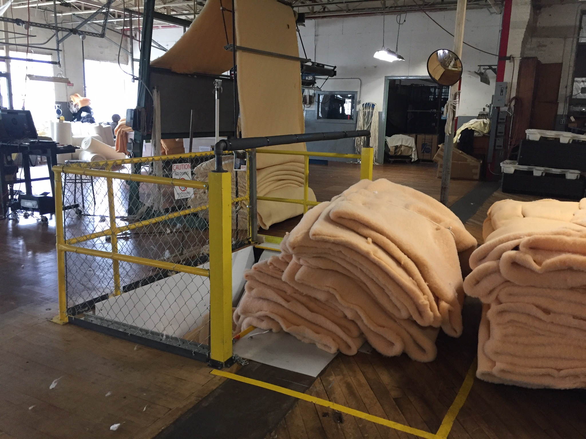
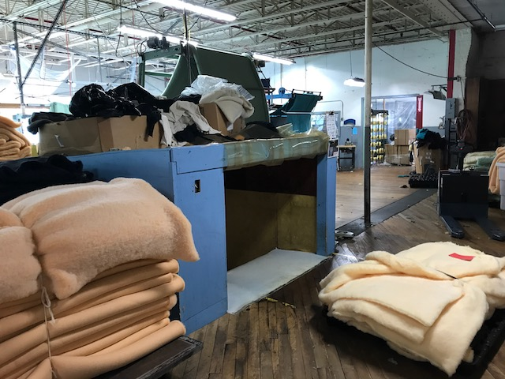

Textile Mill Redesign
This past summer I worked with a professor of anthropology at Olin and a team of three other students to do a research and design project with a local textile mill. We looked into how automation, globalization, and the Made in America movement have impacted the industry, and discovered how textiles are manufactured. We explored various other factories such as New Balance and Joseph Abboud to understand how complex production processes are carried out. We then completed a full redesign of part of the mill's production line, improving the chute for transferring large bundles of fabric from upstairs to downstairs. We worked directly with both management and the employees to ensure that what we were designing would be safe and easy to use. We also enabled a system of feeding a 200lb product down the chute from the side rather than using the freight elevator on the opposite side of the mill as was implemented previously, saving considerable time for employees that would be better spent on production work. The original form of the chute is pictured below.
